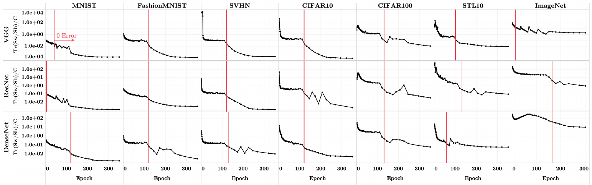
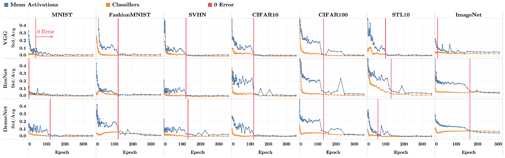
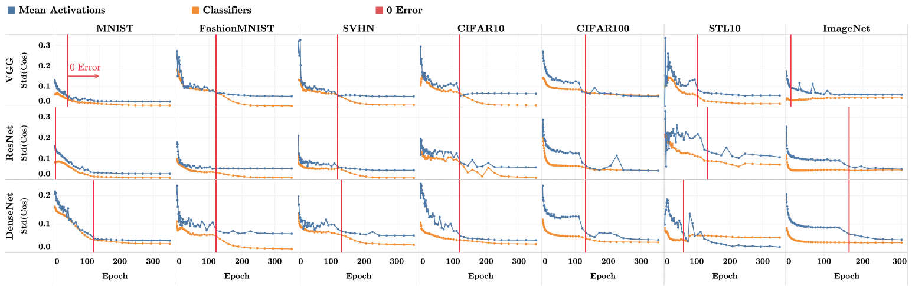
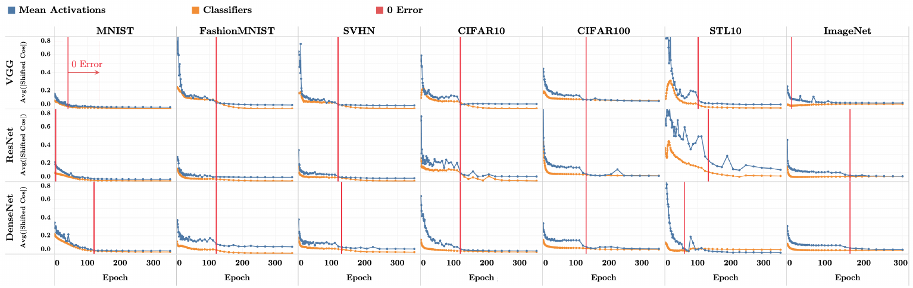
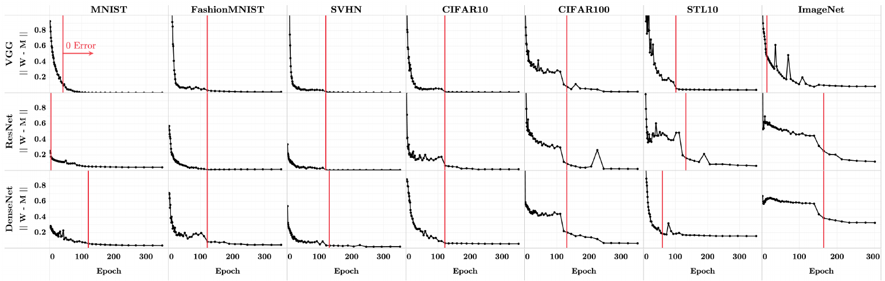
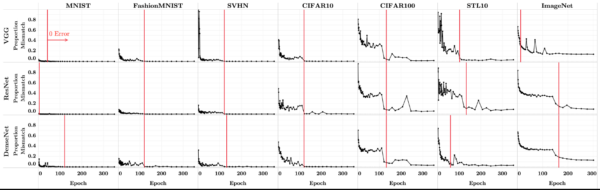
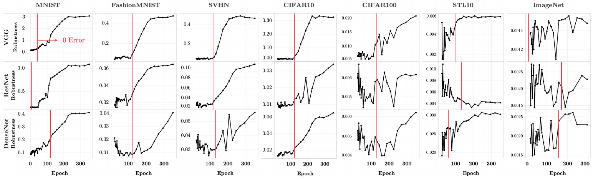

Vardan Papyan, X.Y. Han, David L. Donoho
Proceedings of the National Academy of Sciences 117(40), 24652–24663, 2020 · doi:10.1073/pnas.2015509117
\(\mathcal L\) is cross-entropy.
Standard practice keeps minimizing cross-entropy after every training example is classified correctly. The paper calls this the Terminal Phase of Training (TPT).
A deep net keeps training after zero error. What happens to its features?
Here only \(|\theta|\) can grow. A deep net can also reshape its features, and the paper finds they settle into one rigid, symmetric shape: Neural Collapse.
An illustrative simulation in \(\R^3\) with \(C=4\), where the Simplex ETF is a regular tetrahedron. The geometry is scripted to follow NC1–NC4; every number on the left is computed live from the simulated points. The real measurements come later.
Any rotation or rescaling of it is also a Simplex ETF.
\(C=2\): 180° · \(C=3\): 120° · \(C=4\): 109.5° · \(C=10\): \(\cos=-\tfrac19\) · large \(C\): close to orthogonal
With features held fixed, the best last layer is a modified LDA (Webb & Lowe, 1990), with \(\bSigma_T=\bSigma_B+\bSigma_W\) the total covariance. Add NC1 + NC2 and it is forced to match the means (NC3) and to decide by the nearest mean (NC4).
On separable features, gradient descent on cross-entropy heads to the max-margin classifier (Soudry et al., 2018). Add NC1 + NC2 and, again, NC3 + NC4 follow.
Treat the class-means as codewords sent through small noise, \(\bh=\bmu_y+\bz\), \(\bz\sim\mathcal N(0,\sigma^2\bI)\), \(\|\bmu_c\|_2\le1\). The fastest-vanishing error (largest error exponent) is reached only by a Simplex ETF, read out by \(\bW=\bM^{\top},\ \bb=0\).
Demo (Theorem 5): same noise on both. Left is a Simplex ETF, right is uneven; red × are mistakes. Lower σ and the uneven one falls further behind.
Seven image datasets, all class-balanced: MNIST, SVHN and ImageNet are subsampled to 5000, 4600 and 600 images per class. Pixels are standardized; no data augmentation.
VGG, ResNet and DenseNet, with depth matched to each dataset (table →). Dropout is removed: batch norm in VGG, rate 0 in DenseNet.
Cross-entropy, SGD with momentum 0.9, weight decay 5·10⁻⁴, batch 128, 350 epochs. Each net is trained at 25 learning rates and the one with the best final test error is kept.
ImageNet: 300 epochs, batch 256, weight decay 10⁻⁴, 10 learning rates.
Weights are saved at selected epochs. The training images are passed through each saved net to record last-layer activations, giving the means, covariances and classifier. NC4 is checked on the test set.
TPT starts at 99.9% train accuracy (99.6% for ImageNet), allowing for mislabeled images.
| MNIST | Fashion- MNIST | SVHN | CIFAR 10 | CIFAR 100 | STL 10 | Image- Net | |
|---|---|---|---|---|---|---|---|
| VGG | 11 | 11 | 11 | 13 | 13 | 13 | 19 |
| ResNet | 18 | 18 | 18 | 18 | 50 | 50 | 152 |
| DenseNet | 40 | 250 | 40 | 40 | 250 | 250 | 201 |






How to read: rows are nets, columns are datasets ordered by difficulty. Red line = start of TPT (99.9% train acc.; 99.6% ImageNet). Blue = class-means, orange = classifiers. Press → to step through the figures.
3 of 21 decrease (red), so the gains are not universal.

\(r(x_i)\) is the smallest perturbation that flips the prediction. Most of the gain happens during TPT. The median improvement is 0.0252 and the mean is 0.2452, so the mean is dominated by a few cells such as MNIST.
One representation of multimodal biological data, used for several tasks
For clustering it looks good: clustering works like classification, so tight, well-separated groups help.
But the same representation also feeds other biological tasks.
There we never want different cells to share one representation: collapse erases the cell-to-cell differences those tasks need.
Han, Papyan & Donoho · ICLR 2022 · Outstanding Paper Award
Swap cross-entropy for squared error: the same four collapses appear.
It explains how training gets there: at every moment the last layer is already the best fit to the current features, so only the features need to be followed.
They call this path the “central path”.
Súkeník, Mondelli & Lampert · NeurIPS 2023
Put ReLU layers before the classifier: the earlier layers collapse too. This is deep neural collapse, and it is provably the best solution.
Proved for 2 classes.
The shape changes: after a ReLU every feature is ≥ 0, so the class-means end up at right angles instead of at the ETF angle.
TakeawayKeep training after zero error, and the last layer settles into the simplest, most noise-robust shape there is.
Online presentation can be found at bu1th4nh.github.io/presentations/ucf_fall26_map6197_neuralcollapse